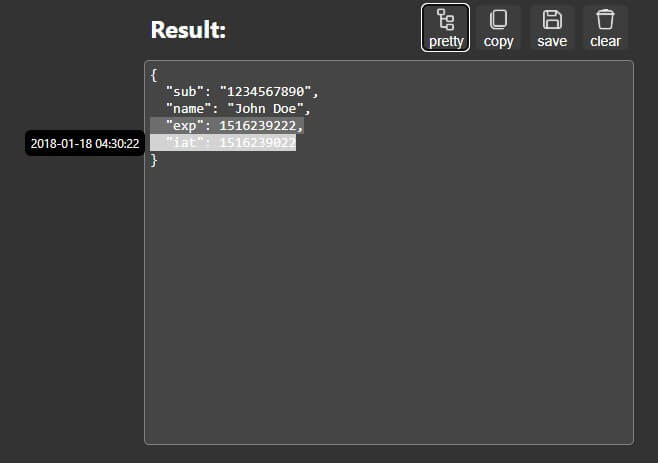
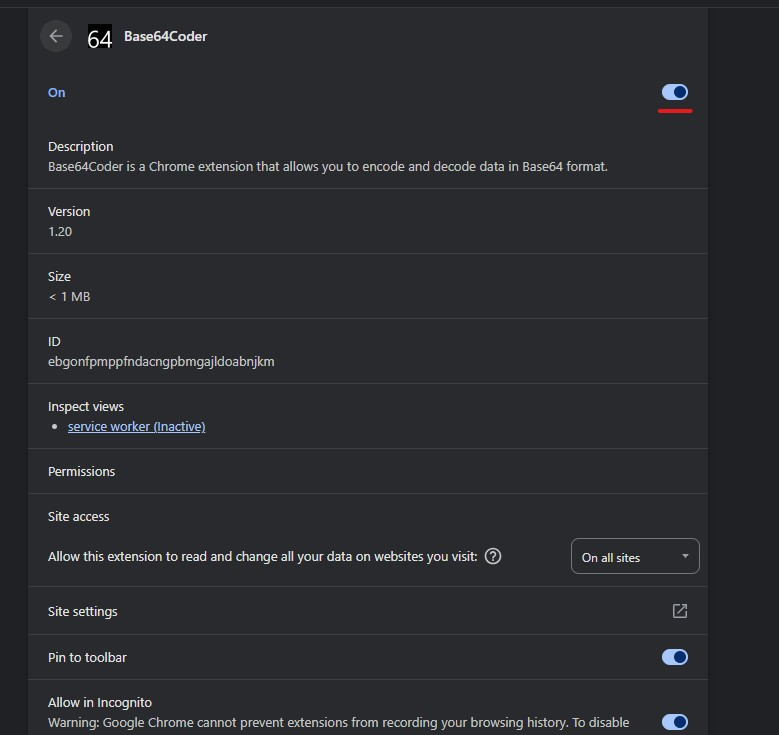

Base64Coder Guide
To activate the extension, enter '64' in the search bar and press 'Tab'.
Write or paste text that you want to convert and choose the conversion direction: 'base64 - text' or 'text - base64' using keyboard or mouse.


The context menu provides access to the following extension features:
- copy base64 -> text - converts the selected text from base64 to text.
- copy text -> base64 - converts the selected text to base64.
-
copy image -> base64 - converts and copy the image under the pointer to base64. Process of converting images to base64 can take some time, you can see the progress in the extension icon.
 - the process is running.
- the process is running.
 - the process is done.
- the process is done.
- an error occurred during the process.
- open base64 - opens the selected text in the extension where you can covert it to what you need.

The extension provides the following keyboard shortcuts:
- Ctrl + S - saves the result to the file. (Video is not supported)
- Ctrl + Shift + S - saves the result to the file without base64 mime prefix. (Video is not supported)
- Shift - buttons "Copy" and "Save" will do their function removing base64 mime prefix. The "Clear" buttons simultaneously clear the source and the result.
- Shift + Backspace or Shift + Delete - clears the source and the result.
-
Alt + Number - activates the corresponding button in the action area.

- Ctrl + C - copies text result to clipboard if nothing is selected. If something is selected, then the combination works as usual.
- Ctrl + Shift + C - copies text result to clipboard without mime type prefix if nothing is selected. If something is selected, then the combination works as usual.
- Ctrl + O - opens the file in the extension.

If the result is JSON, you can use the "Pretty" button, which formats the JSON. If JSON contains properties such as "iat", "exp" (which usually exist in JWT), the extension allows you to view the date/time in a human-readable format.

The extension can automatically detect JWT tokens and decode them with a single click using the "jwt" button. The payload is displayed as formatted JSON.
For any JSON result (including JWT), use the "pretty" button to format it with indentation or "minify" to compress it. If the JSON contains JWT timestamp fields like "iat" (issued at) or "exp" (expiration), hover over them to see the date/time in a human-readable tooltip.
Try turning it off and then turning it back on.


If this doesn't help, write to me. Maybe I can help.
E-mail: rodewitsch@inbox.ru